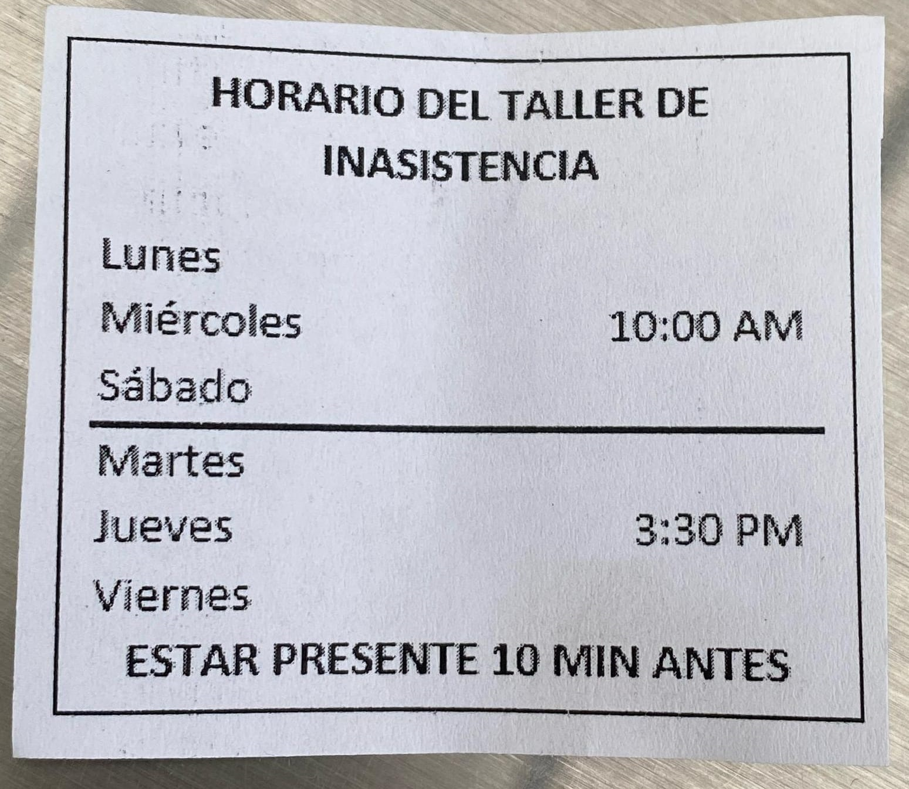

En este apartado podras visualizar las preguntas frecuentes que tiene los usuarios de MEDICARE, busca tu pregunta y clickea en esta para desplegar la respuesta.
Los horarios del taller de Inasistencia son distintos dependiendo del dia, los dias Lunes, Miercoles y Sabado el taller es a las 10:00 am, los dias Martes, Jueves y Viernes es a las 4:30 pm.
Posdata: El taller se realiza en sala de juntas, primer piso, estar 10 minutos antes para garantizar su asistencia, ya que la puerta se cierra muy puntual.

Los documentos de identidad (Registro civil, Tarjeta de Identidad, Cedula de Ciudadania, ETC) son muy importantes en medicare ips, toda persona la cual vaya a ingresar a la institucion debe de traer su documento, (Asi sea acompañante) de lo contrario no se le permitira el ingreso.
Si viene hacer cualquier tramite (Cita Medica, Vacunacion, Examenes, Reclamar Resultados, Etc) debe de traer su documento para que se le acepter el procedimiento, de lo contrario no se le atenderá.
Importante: No se aceptan fotocopias, ni licencias de conducir, ni copia laminada, ni carnets de identidad, etc. Si perdio su documento de identidad, debe traer su contraseña que demuestre que su identificacion esta en tramite, o en caso de robo debe poner el denuncio, o traer cualquier otro papel admitido por la registraduria.